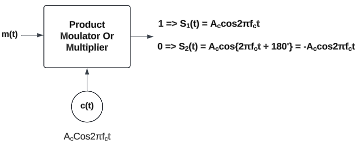

Instructions for Phase Shift Keying Modulation (PSK)
- Note: Use the input fields to enter the carrier frequency, sampling frequency, number of bits, and the bit rate.
- Step 1: Click the "Generate Message" button to generate the input message signal.
- Step 2: Click the "Generate Carrier" button to generate the carrier signal.
- Step 3: Click the "Simulate PSK" button to generate the PSK signal.
- Step 4: Click the "Show Frequency Spectrums" button to view the spectra of the PSK signal.

Instructions for Phase Shift Keying (PSK) Demodulation
- Step 1: You can Demodulate the FSK Signal clicking on the 'Demodulate PSK' button
- Step 2: Click on the 'Generate BER vs SNR' button to plot BER vs SNR graph
- Step 3: Click on the 'Generate Constellation' button to see the constellation diagram for the same